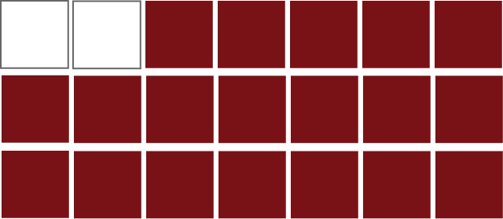
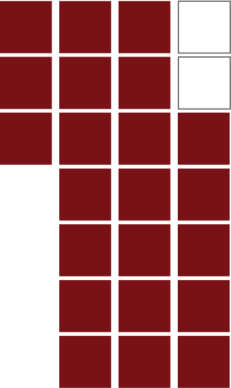

images here


In the grid system in Graphic Design, Josef Muller-Brockmann already mentioned the East Asian grid system in the section of "Practical Examples", showing the usage of grids in the Japanese magazine Bijutsu Techo. He noted that "the Japanese characters, like the Chinese, are built up on the square form."
In other words, modern Chinese typefaces are built upon square character bounding boxes. Chinese characters (Hanzi) fit exactly in cells, which in turn compose lines and eventually form a frame grid. The dimensions of a singular cell can be used to measure every aspect of Chinese typesetting - from spacing to leading and to line length. We can always use the character size as a unit. In some contexts we can simply refer to it as the "em".
In such a grid system, it is only a natural decision to justify all the paragraphs. If one insists in making it ragged-right, he has to insert line breaks manually, because Chinese text has no word break that makes ragged-right effect reasonable, and such practice is hardly seen.